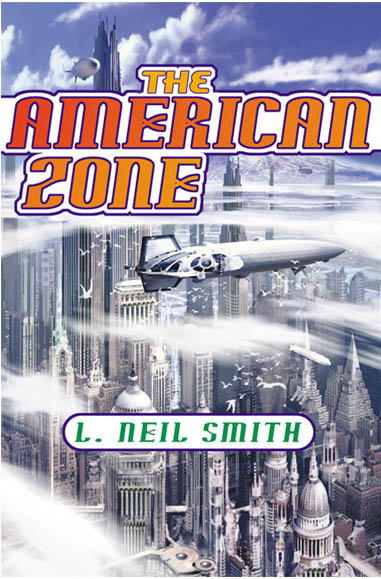

The American Zone
by L. Neil Smith
lneil@lneilsmith.org
publication date: November 2001 from Tor books
Proclaimed the "Freedom Book of the Month" for December, 2001, by Free-Market.net
Dear friends and readers --
Years ago, at the beginning of my career as a libertarian science fiction writer, I predicted the collapse of the Soviet Empire in one of my novels. I had my reasons, but my editor, something of a Soviet affairs expert himself, sneered at my prediction and dismissed it as "wishful thinking".
In my early works I had already predicted digital watches, laptop computers, and the Internet as we've come to know it; ten years later I was proven correct about the Soviet Empire. Later, I predicted that "Y2K" would come to nothing. All of those were happy predictions I was glad to be right about.
Now I've been proven right again -- though I'm not sure how happy I am about it -- in my latest novel, The American Zone, which I began planning about seven years ago. I recall giving a speech at the 1996 Colorado Libertarian Party convention (the only LP convention in my native state I've ever been invited to address) that consisted of reading the synopsis for The American Zone, a project I hadn't yet sold to a publisher. Now I'm writing to announce that it will be a new Tor hardcover this November.
Maybe I should explain for those who haven't read The Probability Broach or other books in my "North American Confederacy" series, that they're "alternate history" stories about a culture that diverged from ours in 1794 when Pennsylvania farmers won the Whiskey Rebellion (put down savagely in our own history) and the size and power of government grew smaller over the next two centuries. In The Probability Broach, Congress hasn't met for thirty years.
My latest novel begins with the second most horrible prediction I've ever made, the destruction of a mile-tall building in Greater LaPorte by those whom many today are inclined to call "terrorists". The death toll is in four figures. (My most horrible prediction, in The Probability Broach, was that to deter the Chinese, Russians used nuclear weapons to put a crack in the Moon visible from Earth.)
Other disasters follow, and "the usual suspects" demand security measures that are completely alien to the North American Confederacy: a strong central government, an end to crossworld immigration and expulsion of recent newcomers, taxation, victim disarmament, even a compulsory identification system.
Sound familiar?
Well it ought to. What won't sound familiar is the way our hero, former homicide detective Win Bear, his wife Clarissa, and their pals Lucy Kropotkin and Will Sanders track down the villains and deal with them, based on the individuality of everyone concerned. And unlike the collectivist methods being proposed against those responsible for what happened at the World Trade Center on September 11, it will work.
Collectivist methods will not. The U.S. government clearly learned nothing from the humiliation of the Russians in Afghanistan, from that of Americans in Vietnam, from Pershing's embarrassment by Pancho Villa in Mexico, or from our successes against the equally stupid British government in the Revolution and the War of 1812.
For that reason (and others obvious to anyone who has mortgage payments to make), I urge you to buy The American Zone, in which a truly free society handles "terrorism" just like any other crime. It doesn't hysterically declare war on anybody and everybody. It doesn't immediately increase the violations of individual rights that caused the problem. It doesn't tolerate more such crimes, but deals with the criminals (and nobody else) swiftly and effectively.
Win starts out working for Clark Gable and Carole Lombard. Along the way, he encounters folks you may remember (during this period, Olongo Featherstone-Haugh is President) and shows you more of Greater LaPorte than you've seen before. Will's two wives are as beautiful and vivacious as ever -- and pregnant. There's lunch at Mr. Meep's. We'll meet the sinister figure behind Griswold's Security -- brrrrrr! And there are familiar faces from our universe, some of them finally getting what they deserve.
There's also an experiment in The American Zone you may find interesting. Several characters are drawn from the Nolan-Fritz diagram you know from "The World's Smallest Political Quiz", and display the qualities of their relative positions on the diamond. You may find this useful, for example, in demonstrating that libertarians are no closer, ideologically, to "conservatives" (or right-wing socialists) than they are to "liberals" (or left-wing socialists).
Look for the "World's Smallest Political Quiz" here:
With the holidays coming, The American Zone will make a handsome gift. Buy one for yourself. Buy several for relatives and friends. And don't forget to buy The American Zone for enemies you want to see driven to mindless gibbering and perforated ulcers.
More good news: a beautiful new edition of my first North American Confederacy adventure, The Probability Broach -- in trade paperback format -- follows The American Zone from Tor Books in December.
Order The American Zone from Amazon.com via this link: ORDER, or click the link for more information.
Jacket art by Stephan Martiniere
Edited by James Frenkel
A TOR® Hardcover
Published by Tom Doherty Associates, LLC
175 Fifth Avenue
New York, NY 20010
www.tor.com
ISBN: 0-312-87369-7
First Edition: December 2001